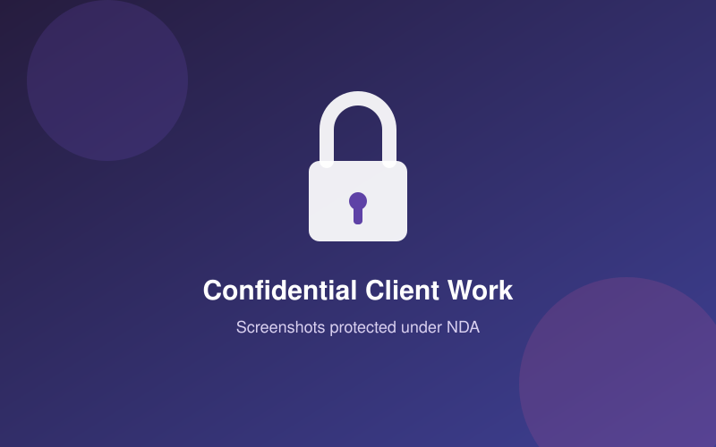
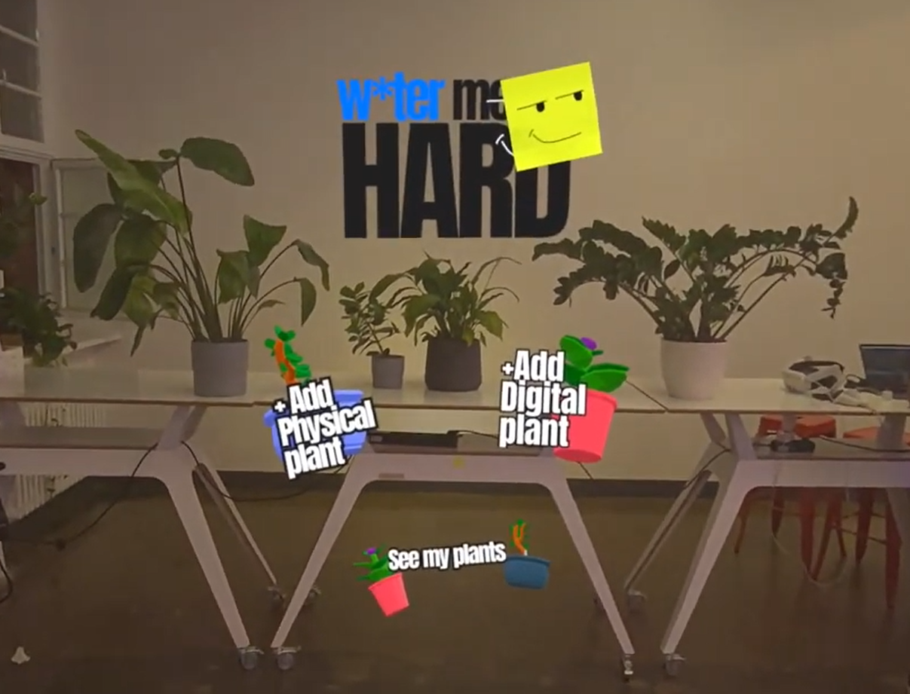
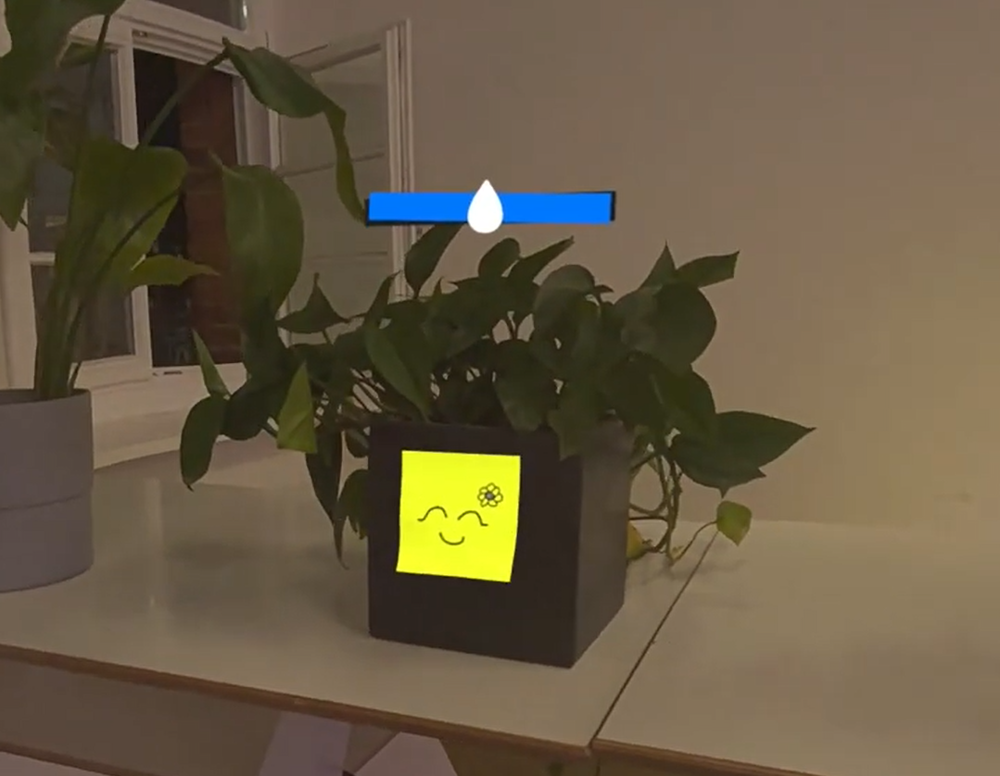

Freelance Work

Since going freelance in 2024 I have worked with several clients on interactive applications, mostly in VR/XR and mobile. Since this is client-owned work, I am not able to share screenshots or footage, but I can describe the technical scope and my role in each project.
VR First Aid Training Simulation
Dec 2025 - Mar 2026 · Platform: Meta Quest (VR) · Client: confidential
I developed the full training simulation scene for a first-aid VR experience, built on the client's in-house VRTK-based framework. Another developer integrated the scenes that came before mine in the flow.
- Simulation and interaction logic using the client's VRTK framework
- Multilingual support using the Unity Localization Package
- Narration and voice guidance using ElevenLabs Text-to-Speech
AI Wellness Companion App
Mar - Jul 2024 · Platform: Mobile (iOS) · Client: Interco LLC
I started this project as an employee at Interco LLC, working alongside a team, and continued it afterwards as a freelancer at the client's request. It's a mobile app built around a virtual companion pet meant to support emotional wellbeing, with an AI backend handling conversation and behaviour.
As a freelancer I focused on gameplay, the core companion activities, and the integration and communication with the ChatGPT API. A separate team continued work on other parts of the app in parallel, such as the in-app store, internal economy, and avatar customization items. All art and 3D modelling was done by a different teammate.
- Gameplay and core companion activities implementation in Unity
- Async, socket-based communication with a custom ChatGPT API pipeline, including contributions to prompt design
- Speech-to-Text and Text-to-Speech using Microsoft Cognitive Services
XR Creator Con Hackathon - "Water me Hard"
Jun 2024 · 2nd place, Best Use of ShapesXR


An AR plant care app where each plant has its own AI-driven personality, built to make watering your plants a little more fun and memorable. This was a team project, put together during the hackathon with collaborators from Mexico, Australia, Poland and India. My contribution was the Unity implementation; the rest of the team covered design, UX/UI, ShapesXR prototyping, asset creation and the trailer video.
- Unity implementation of the mixed reality plant care experience
- Team also covered: UX/UI and ShapesXR mock-ups, visual and 3D asset creation, video prototyping and the promotional trailer